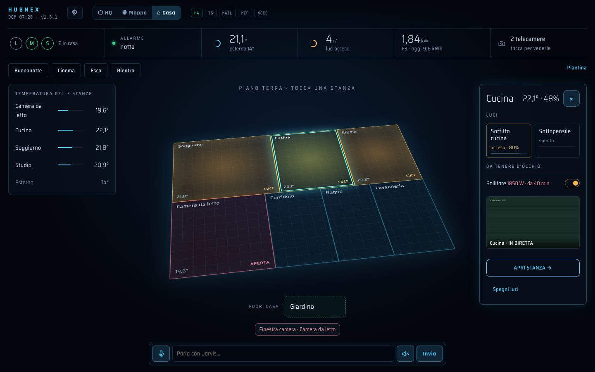
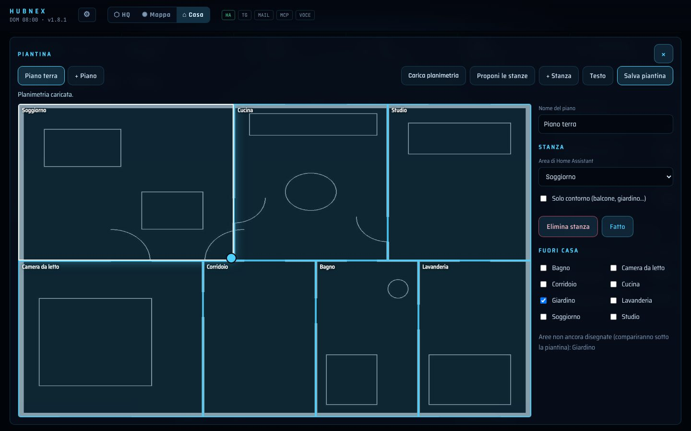
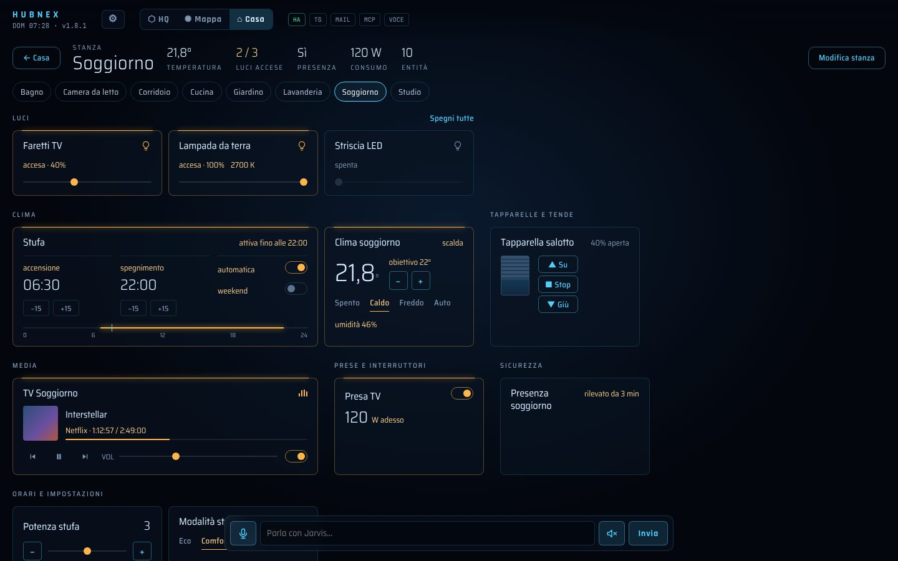
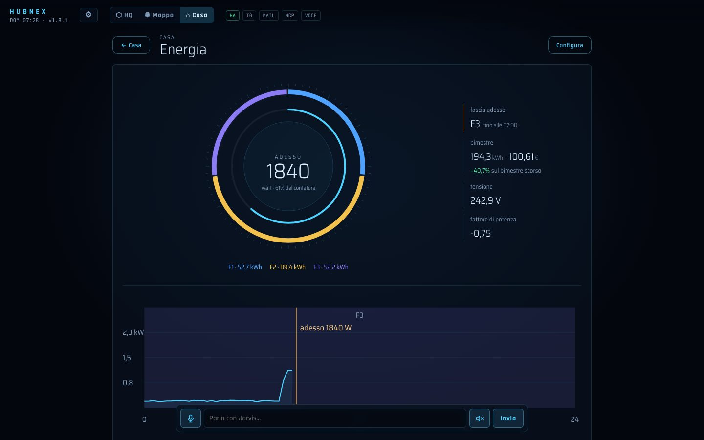
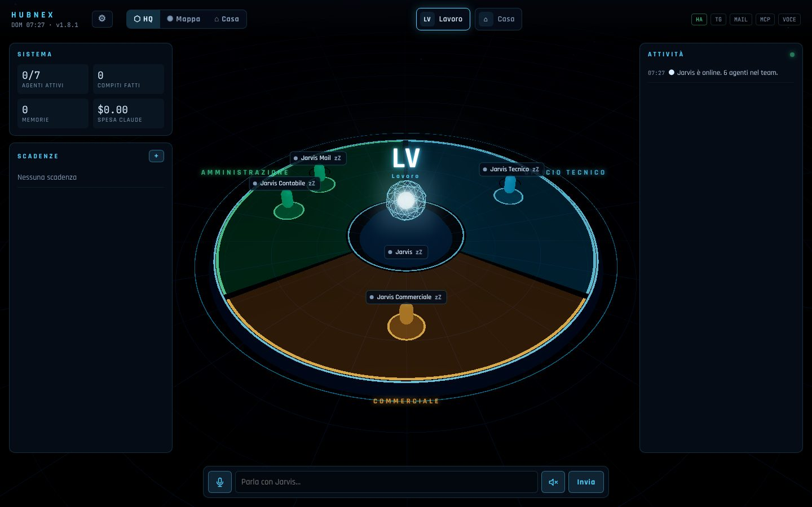
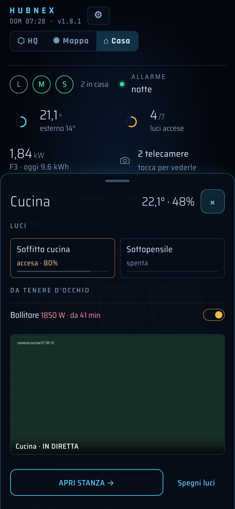

Il quartier generale della tua casa e del tuo lavoro, con un assistente che fa solo quello che gli chiedi.
Un assistente in stile Jarvis coordina un piccolo team di agenti AI, tiene d'occhio la posta e le scadenze, si collega ai programmi del lavoro. Accanto, una plancia di Home Assistant pensata da zero: la casa sulla sua piantina olografica, una card per ogni dispositivo, l'energia letta come una bolletta.

La plancia che Home Assistant meritava
Le stanze sono le aree di Home Assistant, disegnate sulla tua planimetria: la carichi in foto o PDF e l'AI propone le stanze, tu le rifinisci con il dito. Tocchi una stanza e si apre la sua scheda; i comandi vanno dritti a Home Assistant, senza AI e senza costi.
- Carichi la planimetriaUna foto, una scansione o un PDF della tua casa, anche più piani. Diventa lo sfondo su cui disegnare.
- L'AI propone le stanzeCon "Proponi le stanze" l'AI riconosce i locali e li abbina alle aree di Home Assistant. Tu sposti gli angoli con il dito e correggi.
- Dentro e fuori casaBalconi e giardino diventano contorni o finiscono sotto la piantina, sotto "Fuori casa".
- Diventa un ologrammaSalvi e la planimetria si trasforma nella piantina 3D della vista Casa: luci accese, temperature e finestre aperte a colpo d'occhio.


- Una card per ogni cosaLuci con la luminosità, clima con il quadrante, tapparelle disegnate, media con copertina e volume, prese con il consumo, sensori con il grafico delle 24 ore.
- Le tue cardComponi una card con più entità: la stufa con accensione, spegnimento e "automatica", che dice da sola "attiva fino alle 22:00".
- Orari e impostazioniGli helper di Home Assistant (orari, numeri, liste) si cambiano da qui: le automazioni restano dove sono.
- Tutto da HubNEXOrdini, rinomini, scegli i gruppi e le dimensioni senza toccare Home Assistant.
La bolletta, prima della bolletta
Tre modi di leggere i consumi, da scegliere o tenere insieme. Le fasce F1, F2 e F3 le calcola HubNEX dal calendario ARERA, festivi compresi; per chi ha una tariffa unica basta un interruttore.
- Il reattoreIl bimestre diviso per fascia attorno alla potenza di adesso, in percentuale del contatore.
- La giornataLa potenza di oggi sullo sfondo delle fasce: si vede quando consumi, e quanto in ogni fascia.
- La bollettaQuanto hai speso, quanto spenderai al ritmo di oggi, cosa è cambiato rispetto al periodo scorso. E un consiglio quando una fascia cresce.

Un assistente, molti specialisti
In agents.yaml descrivi le tue attività, i reparti e gli agenti. L'assistente delega: la posta all'agente della posta, le ricerche tecniche al tecnico, i preventivi a chi se ne occupa. Il quartier generale 3D mostra chi sta lavorando, la mappa neurale ciò che il team ha imparato.

Telegram
Un gruppo con l'assistente e l'agente della posta. Scrivi o mandi un vocale, ti rispondono anche a voce.
Posta con bozze
Le email vengono smistate per priorità; ogni risposta è una bozza che approvi tu. Niente parte da solo.
I programmi del lavoro
Gestionali, calendari, CRM: tutto ciò che offre un server MCP. Gli agenti leggono liberamente, ogni modifica aspetta il tuo ✅.
Voce
Agente di conversazione per Assist, sintesi di Home Assistant (anche Piper, locale e gratuita) o ElevenLabs.
Scadenze e memoria
Le scadenze nelle email diventano promemoria; il team ricorda clienti, prezzi e decisioni.
Costi sotto controllo
La spesa Claude stimata è sempre in vista; i comandi della casa e i comandi semplici di Assist non costano nulla.

In tasca, e per tutta la famiglia
Sul telefono la scheda di una stanza sale dal basso: trascini giù per chiuderla, su per aprire la stanza. Ogni persona sceglie cosa vedere.
- Utenti non amministratoriVedono solo la Casa: luci, clima, telecamere, allarme con il codice. Niente assistente, posta o costi. Il controllo lo fa l'add-on.
- Solo la CasaChi vuole solo accendere una luce spegne HQ, Mappa e assistente dalle preferenze.
- All'avvioHubNEX può essere la prima schermata di Home Assistant, account per account.
Un assistente che non prende iniziative
Niente senza il tuo ordine
Le routine sono spente finché non le accendi. Nessuna azione in casa senza una tua richiesta; serrature e allarme chiedono conferma o il codice.
Ogni modifica passa da te
Email, dati dei programmi di lavoro, azioni delicate: prima una proposta con ✅ / ❌, poi l'esecuzione, una volta sola.
I tuoi dati restano a casa
Configurazione, planimetria e memoria stanno nel tuo Home Assistant e finiscono nei suoi backup. Il repository non contiene nulla di tuo.
Aperto
Codice open source con licenza MIT. Ogni parte si accende quando serve: si parte con la sola chiave Anthropic.
Tre minuti per accenderlo
- Home Assistant → Impostazioni → Componenti aggiuntivi → Store → ⋮ → Repository: aggiungi
https://github.com/P1pp89/HubNEX. - Installa HubNEX, inserisci la chiave API Anthropic, avvia e attiva "Mostra nella barra laterale".
- Apri HubNEX, disegna la tua piantina e racconta all'assistente chi sei. Telegram, posta, voce, energia e connettori si aggiungono quando vuoi.
Alimenta il reattore
HubNEX è gratuito e lo resterà. Ogni funzione nasce nel tempo libero, una notte alla volta. Se ti semplifica la giornata, un caffè tiene acceso il reattore e porta la prossima versione più vicina.
Offri un caffè con PayPal